Modelica Newsletter 2014-1
Newsletter #1 of 2014 (News from Modelica Association, from Modelica related projects and from Modelica tool vendors)
Table of Contents
- Letter from the Board
- Modelica Association News
- Educational News
- Dymola and Modelica training courses in the UK
- European Wolfram Technology Conference
- Certified Dymola and Modelica Courses for Professionals
- New Advanced Training Courses for Modelica and TIL
- Dymola and Modelica Training in German
- Modelica Training Courses at the ITI Academy
- Videos on Modelica, FMI and Model Deployment
- Modelica Conference App
- Modelica Book Cover Art Contest
- Library News
- HumanComfort Library® 1.3 and more XRG Library updates
- New physics-based fuel cell model library
- New Free Planar Mechanics Library
- New Release of Heat Exchanger Library, 1.1
- Thermo hydraulics available in Hydraulics Library, 4.0
- System Dynamics Library with World Simulation available with OpenModelica
- Vendor News
- JModelica.org 1.12
- FMI Add-In for Excel version 1.3
- FMI Toolbox for MATLAB/Simulink version 1.7.1
- Improved Modelica Support in AMESim Rev 13
- Full FMI range now covered in AMESim Rev 13
- TLK's DaVE is now providing thermal state diagrams
- SimulationX 3.6 available now
- 17th ITI Symposium - Call for Papers
- OpenModelica 1.9.1 Beta Release
- Dymola 2014 FD01
- New libraries for Dymola
- Dassault Systèmes at Modelica 2014
- New MapleSim release offers improved performance, flexibility
- Maplesoft at the International Modelica Conference
- ETAS GmbH introduces FMI-based integration and simulation platform
Letter from the Board
Dear Modelica interested,
The 10th International Modelica Conference is approaching. It will take place at Lund University in Sweden. The number of papers submitted increased by more than 50% compared to the previous conference. As a result, the rejection rate for the papers was considerably higher (based on 3 reviews per paper) and it was decided to have one additional parallel track at this conference. There will now be 115 regular and 22 poster presentations. For more details, see below.
On October 18, 2013, a release candidate for the upcoming Functional Mockup Interface, version 2.0 (FMI) was published. Version 2.0 is a major enhancement compared to FMI 1.0 based on practical applications involving the FMI 1.0 standard. For example, The FMI Model Exchange and Co-Simulation standards have been merged. In addition, the sparsity pattern of Jacobians can be defined so that large numbers of states can be handled. Furthermore, linear and/or nonlinear algebraic loops can not only be treated during the continuous integration phase but also at events and during initialization. In the meantime, the free FMI compliance checker was enhanced to version 2.0 RC1 and can now be downloaded. In order to guarantee a stable and realizable FMI 2.0 specification, the final release will be published as soon as a sufficient number of tools pass the FMI Compliance Check Rules.
If you have interesting news for the Modelica community, please contact the newsletter editor (Michael Tiller) for information on how to submit newsletter articles for possible inclusion in the next newsletter. The deadline for articles for the next newsletter is April 30, 2014.
Best wishes from:
Martin Otter (Chairman of the Modelica Association)
Modelica Association News
Modelica Conference 2014
The 10th International Modelica Conference will be held at the Lund University Campus in Lund, Sweden on March 10 - 12, 2014. It is organized by the Modelica Association and Modelon
The Modelica Conference is the main event for users, library developers, tool vendors and language designers to share their knowledge and learn about the latest scientific and industrial progress related to Modelica and the Modelica Association and to the Functional Mockup Interface. The program will cover modeling of complex physical and cyber-physical systems, as well as tools, for a wide range of research and industrial applications. All contributions are peer-reviewed and selected by the Program Committee. In addition to traditional paper presentations and poster sessions, the conference features several Modelica tutorials for beginners and advanced users on March 10th , as well as vendor presentations, and an exhibition. The last Modelica conference in 2012 was visited by 350 participants from all over the world, and we expect more attendees at this conference.
The preliminary program is already available online, including paper and session titles.
The conference registration is open. We are looking forward to seeing you in Lund
Dr. Hubertus Tummescheit and Prof. Karl-Erik Arzén
Program Chairs
This article is provided by Hubertus Tummescheit (Modelon AB)
Educational News
Dymola and Modelica training courses in the UK

Claytex are planning to run our Introduction to Dymola and Modelica course in the UK starting on the 18th March 2014. This is a 3 day course aimed at new users of Dymola and Modelica and covers all the fundamental concepts you need to be familiar with to maximise the benefits of using Dymola. The course is taught through extensive examples to give you hands-on experience of working with Dymola.
For further details on our training courses and schedule please see http://www.claytex.com/training/.
This article is provided by Mike Dempsey (Claytex Services Limited)
European Wolfram Technology Conference
Learn more about Modelica modeling, simulation and design with Wolfram SystemModeler and Mathematica at the European Wolfram Technology Conference in Frankfurt, Germany. The conference features multiple Wolfram SystemModeler talks, including presentation of upcoming features. It is also an excellent opportunity to learn more about all major technologies and the many applications made possible with Wolfram technology. The conference takes place May 27-28, 2014.
For more info visit http://www.wolfram.com/events/technology-conference-eu/2014/.
Wolfram also offers a half day training, Wolfram SystemModeler: An Introduction", the day before the conference. The course introduces the basic features needed to become an adept user of Wolfram SystemModeler, including drag-and-drop modeling, creating components, simulating models, and visualizing simulation results. The course also covers integrating Wolfram SystemModeler and Mathematica, using Wolfram SystemModeler Link. Small class sizes allow for interaction with the instructor, and in-person courses have extra time for Q&A.
For more info visit: http://www.wolfram.com/training/courses/wsm101.html
This article is provided by Jan Brugård (Wolfram MathCore)
Certified Dymola and Modelica Courses for Professionals
Modelon offers certified Dymola and Modelica training for both new and experienced professional users in industry and academy. We have scheduled courses in Europe, USA, and now also Japan, and give courses world-wide and on-site on demand. Upcoming training events:
- February 24-28, Ann Arbor, USA: Dymola Introduction Course
- March 3-7, Göteborg, Sweden: Dymola Introduction Course
- March 24-28, Tokyo, Japan: Dymola Introduction Course
- May 5-9, Ann Arbor, USA: Dymola Introduction Course
- May 12-16, Munich, Germany: Dymola Introduction Course
- May 19-23, Lund, Sweden: Dymola Introduction Course
- September 15-19, Hamburg, Germany: Dymola Introduction Course
See our schedule for additional events. See our full catalog for a listing of all available courses, also for libraries and specific industry domains and applications. Please contact us for further information or register here.
This article is provided by Magnus Gäfvert (Modelon AB)
New Advanced Training Courses for Modelica and TIL

In addition to our established training for Modelica and TIL, we present two completely new advanced training sessions "Modelica Advanced" and "TIL Advanced".
Modelica Advanced Training: March 4th, 2014
The participants will get a better understanding of the numerical solution process in Modelica simulators. With this theoretical knowledge the participants are able to formulate fast models and solve performance issues of existing models.
- Introduction to the theory of linear differential equations
- Numerical solutions of differential algebraic equations
- Handling of discontinuities in model equations
- Advanced Modelica language elements: homotopy operator, stream connector
TIL Advanced Training: March 5th, 2014
Based on examples, systematic strategies for more efficient working with TIL models will be taught. Participants will learn how to find reasons for termination of simulation calculations or long computing times and how to solve these problems.
- Advanced modelling and initialization concepts of TIL
- Troubleshooting of system models
- Usage and extension of TIL 3.2 and TILMedia 3.2
Established training courses for Modelica and TIL: March 18th - 20th, 2014
For further Information see www.tlk-thermo.com
This article is provided by Matthias Kwak (TLK-Thermo GmbH)
Dymola and Modelica Training in German
BAUSCH-GALL GmbH offers the following 2-day training classes for Dymola and Modelica in German language at our office in Munich:
- Modeling and simulation with Modelica and Dymola (by Martin Otter, Chairman of the Modelica Association) on March 24-25, 2014.
- Introduction to Dymola and Modelica on May 19-20, 2014.
For more information, please contact info@bausch-gall.de or register on our webpage. All classes are also offered at your location.
This article is provided by Leo Gall (BAUSCH-GALL GmbH)
Modelica Training Courses at the ITI Academy
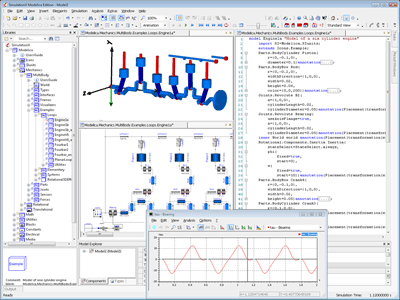
The Modelica course on May 7, 2014, introduces participants to the object oriented model description language “Modelica”. They will learn the basics of modeling and simulation through appropriate examples from the Modelica libraries for physical domains.
Content
- Introduction and motivation: simulating and analyzing dynamic systems with Modelica
- Mathematical models of technical systems through Modelica (syntax)
- Concepts of modeling in Modelica, efficient implementation of models and libraries
- Libraries for physical domains in the Modelica standard library
- Additional expressions, graphical representation of models
- Mathematical aspects and robust modeling
This article is provided by Manuela Joseph (ITI GmbH)
Videos on Modelica, FMI and Model Deployment
Over the last year, Xogeny has been trying to raise awareness about Modelica, FMI and model deployment. These talks were recorded and Xogeny is pleased to make them publicly available in the hope that they can continue to build awareness on these important topics:
- Modelica and Model Deployment - This talk includes some introduction to the topics of Modelica and model deployment. It is a fairly high-level talk about how Modelica, as a technology, fits into the industrial system engineering process.
- Web-Based Engineering Analysis - This talk focuses on the possibilities that are enabled by FMI and uses Xogeny's FMQ platform to demonstrate the role that FMI can play in model deployment.
This article is provided by Michael Tiller (Xogeny)
Modelica Conference App
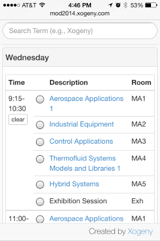
Xogeny is proud to be providing a mobile-ready web application to help attendees organize their time at the Modelica conference.
The app should run in any modern browser on either desktop computers or mobile devices. The app provides a complete overview of all conference activities (tutorials, posters, papers, vendor sessions, etc). Current features include:
- Search for sessions and papers by author, keyword, session title or abstract.
- Mark sessions you plan to attend [stored directly on your device]
- Review abstracts and mark individual papers (to help decide which sessions to attend or detect potential conflicts between sessions). [stored directly on your device]
Note, the conference program has not yet been finalized. But you can already test the initial release of the application by simply visiting the following web site:
We encourage attendees (or people who are simply curious) to test the application out. For example, search for papers on a particular topic you are interested in or search for papers written by you or someone else. Send any feedback about bugs or potential feature enhancements to modelica2014@xogeny.com.
See you all in Lund!
This article is provided by Michael Tiller (Xogeny)
Modelica Book Cover Art Contest

Things have been progressing nicely on Xogeny's Creative Commons Modelica Book project. So much so, that we are ready to take submissions for the book's cover art. As you may (or may not) know, backers of the book get to vote (in proportion to their support) on the cover art for the book. But in order to vote, they have to have things to vote for.
So, if you would like to submit book cover art for consideration, please send it to bookart@xogeny.com. We'll collect it all and when we are ready we'll set up a survey for backers to fill out featuring all the submissions.
This article is provided by Michael Tiller (Xogeny)
Library News
HumanComfort Library® 1.3 and more XRG Library updates
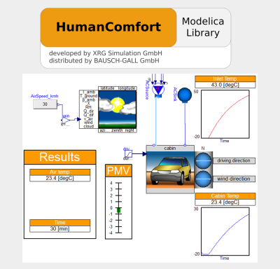
HumanComfort Library® contains modular models to estimate the thermal comfort of occupants or a group of occupants within an air-conditioned zone. The comfort results are provided in form of mathematical criteria and graphical visualizations. Zone models are used to design and optimize air-conditioning systems for buildings, aircrafts and automotive applications.
Key features of version 1.3:
- Multi-layer walls can be simplified to one capacitive mass without changing parametrization.
- New pressure loss models (vessel equations, simple quadratic, constant)
- A new weather model allows changes of latitude and longitude during simulation. This enables long flight or driving scenarios, where solar radiation changes geographically.
- All parts of an automotive or aircraft zone have a common frame of reference. This allows turning cabins in all directions, dynamically.
- Updated to Modelica Standard Library 3.2.1
Hydronics Library® is developed by XRG and allows detailed modeling of thermo-hydraulic systems including heat exchangers for humid air and liquids. The new version 2.0.1 of this library has been updated for MSL 3.2.1. It includes all the new features from version 2.0, like flat tube heat exchangers, adaptors for AirConditioning Library (trademark of Modelon AB) and Modelica.Fluid compatible interfaces.
Both libraries are distributed by BAUSCH-GALL GmbH. For more information, please contact info@bausch-gall.de or come and visit XRG's or Bausch-Gall's booth at the Modelica Conference 2014. A further possibility to meet us will be February 20-21 at our booth at ASIM Workshop in Reutlingen, Germany
Furthermore, XRG Simulation GmbH provides updates for the free FluidDissipation Library (version 1.1.5) and the commerical XRG_Media Library which are both compatible with MSL 3.2.1.
The new version 3.2.5 of XRG Media Modelica library contains open-source property functions written in Modelica for the refrigerants R134a, NH3 (R717), CO2 (R744), R1234yf and R245fa. The property models use the Modelica.Media specification for two-phase media.
This article is provided by Stefan Wischhusen (XRG Simulation GmbH) and Leo Gall (BAUSCH-GALL GmbH)
New physics-based fuel cell model library

A free, open-source library called FCSys has been released for modeling proton exchange membrane fuel cells (PEMFCs). The library is:
- Dynamic
- Multi-dimensional (up to 3D, with variable spatial resolution)
- Multi-domain (electrical, chemical, fluid, and thermal)
- Multi-phase (liquid included)
- Object-oriented and fully declarative (even down to the species level)
- Computationally efficient (polarization tests simulate in less than 2 s)
The models encompass a wide range of phenomena such as electro-osmotic drag, liquid pore saturation, capillary action, multi-component diffusion, dynamic phase change, compressible flow, electrode kinetics, and thermal conduction and convection.
The library contains the first physics-based declarative fuel cell models ever available. The models are based on a modified staggered grid approach with explicit conservation equations for material, momentum, and energy. The transport equations include a unique discretization scheme that represents coupled advection and diffusion without nonlinear systems of equations or switching events. The modeling framework is flexible enough that it could be applied to solid oxide fuel cells (SOFCs), electrolyzers, primary and secondary batteries, or flow batteries.
For online documentation and a copy of the library, please visit the FCSys web page. To discuss potential applications or research collaboration, please contact kdavies@hawaii.edu.
This article is provided by Kevin Davies (Hawaii Natural Energy Institute (HNEI))
New Free Planar Mechanics Library
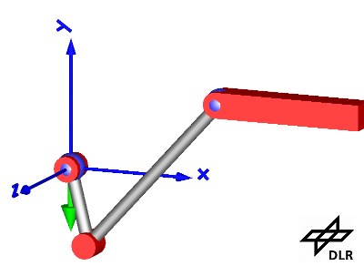
A new free Modelica library for planar mechanical systems has been released by the DLR. It is called PlanarMechanics and can be found under https://www.modelica.org/libraries. It is released under Modelica License 2.
The library is based on the planar mechanics library of Dirk Zimmer that has been presented at the Modelica Conference 2012. Meanwhile, it has been improved with respect to several aspects. New features are:
- Models for sensors and sources.
- A new sup-package for simple gear wheels.
- A world model for gravity and default parameters.
- Improved means for initialization and state selection.
- Improved 3D animation including a parameter for the position on the z-axis.
- Improved documentation
The German Aerospace Center (DLR) will continue to improve and refine this library. Our current goal is to achieve a high level of compatibility for a wide range of Modelica tools.
This article is provided by Dirk Zimmer (DLR-SR)
New Release of Heat Exchanger Library, 1.1
Heat Exchanger Library is a Modelica library for heat exchanger design, dimensioning and stacking. The models are fully geometrically parameterized and account for inhomogeneous flow and temperature distributions.
With this new release, Heat Exchanger Library now features:
- More geometrically parameterized fin types, e.g. rectangular offset strip fins
- Models for pressurized gas, for charge air cooler (“inter cooler”) modeling
- Possible to use two-phase medium models, e.g. when modeling A/C and heat pump
- Compatible with all working fluids in Modelon’s Vapor Cycle Library. This makes it possible to access more than 20 different high-performance medium-properties models.
For detailed information please contact sales@modelon.com.
This article is provided by Carl Wilhelmsson (Modelon AB)
Thermo hydraulics available in Hydraulics Library, 4.0
Modelon offers a significantly improved version of Hydraulics Library. Hydraulics Library is a Modelica library usable to model hydraulics systems which is suitable for all industries that involve hydraulic components and applications. Examples are machine tools, transmissions, and actuation systems.
The new release of Hydraulics Library, 4.0, will be released with the next official major release of all supporting tools and contains:
- “Thermo hydraulics”, it is possible to enable thermal equations, as well as to disregard the temperature effects
- The models of the working fluids are based on polynomials and accurately model fluid properties dependent on temperature and pressure
- A large variety of pre-defined, thermal, oil models is included in the library
- Hydraulics Library 3.x oil models with constant temperature works like before
- Fluid property models of Jet fuels; jet A, jet A1, jet B and JP8
- Includes a new Two-Stage directional control valve (DCV) and an associated example
- Besides the addition of “thermo hydraulics” the library also is significantly improved in terms of ease of use, quality and graphical appearance
For detailed information please contact sales@modelon.com.
This article is provided by Carl Wilhelmsson (Modelon AB)
System Dynamics Library with World Simulation available with OpenModelica
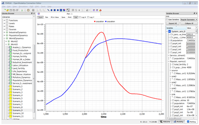
The System Dynamics Library with World Dynamics in Modelica by Francois Cellier et al after the original World3 model by Meadows et al has been updated to be Modelica 3.2 Revision 2 compliant, compatible with MSL 3.2.1, and run well with OpenModelica 1.9.1. It is now bundled with the OpenModelica 1.9.1 distribution downloadable from www.openmodelica.org.
A short instruction how to run World3 simulation scenarios is available in this PDF.
The picture shows the simulated world population according to two scenarios. Scenario 2, fairly close to current developments if not changed, shows a global population collapse around 2060, mainly due to too much pollution (including CO2 emissions) deteriorating the environment. Scenario 9 shows a sustainable society, following from assumed policies starting year 2000 with about 4% per year increase in fraction of renewable energy sources, new smart technology, protection of agricultural land, at most two children per family, etc.
This article is provided by Peter Fritzson (Linköping University)
Vendor News
JModelica.org 1.12

JModelica.org is an extensible Modelica-based open source platform for optimization, simulation and analysis of complex dynamic systems. The main objectives of the project are to create an industrially viable open source Modelica environment, while offering a flexible platform serving as a virtual lab for algorithm development and research. JModelica.org also provides a platform for technology transfer, where industrially relevant problems can inspire new research and where state of the art algorithms can be propagated from academia into industrial use.
Highlights of JModelica.org 1.12
- Improved support for Modelica.Mechanics.MultiBody. JModelica.org now simulates a majority of the example models.
- Improved compliance, including support for:
- Expandable connectors
- When statements
- Event generating built-in functions
- Overconstrained connection graphs
- Automatic differentiation of functions with smoothOrder annotation
- Simulation run-time enhancements including improved robustness when solving linear and non-linear blocks.
This article is provided by Tove Bergdahl (Modelon AB)
FMI Add-In for Excel version 1.3
FMI Add-In for Microsoft Excel® enables steady-state and dynamic simulation of physical models integrated in a spread sheet environment.
FMI Add-In for Microsoft Excel® links state of the art Modelica-compliant tools to Microsoft Excel® through the FMI standard. The power of Excel® combined with the flexibility and portability of the open-standard model format from Functional Mockup Interface (FMI) allows for a highly efficient workflow for experiment setup and reporting for design explorations, batch simulations, and more.
Key features
- Import and simulation of Functional Mock-up Units (FMUs) in Microsoft Excel®
- Parallel computations on multi-core platforms
- Batch simulations, parameter sweeps, design space exploration with easy-to-use and flexible interface
- Based on the validated FMI Library and compliant with all major FMI tools
New in version 1.3
A new license feature, runtime, is introduced which enables a light-weight version of FMI Add-in for Microsoft Excel® focusing on the main model analysis features, such as batch simulations and parameter sweeps.
This article is provided by Tove Bergdahl (Modelon AB)
FMI Toolbox for MATLAB/Simulink version 1.7.1
The FMI Toolbox for MATLAB® provides systems, control and simulation engineers with a solution for seamless exchange of simulation models between any FMI compliant tool and MATLAB® and Simulink. It allows users to combine physical and functional models from different sources for integration on system level to assess and evaluate design choices and performance. The command line interface and the Simulink blockset offer users full flexibility to exploit the simulation and computational power of MATLAB® and Simulink to create insight into the interactions and behavior of complex systems.
Key features
- Import of Co-simulation and Model Exchange FMU using Simulink blockset and MATLAB® command line interface for scripting
- Export of Simulink models as Co-Simulation or Model Exchange FMU
- Static and dynamic analysis through design-of-experiments (DoE) with functions for optimization, calibration, control design, and robustness analysis
- Simulation of FMUs, using MATLAB®'s built in integrators, useful for users without access to Simulink
New in version 1.7 and 1.7.1
- Support for FMU Co-Simulation 1.0 export from Simulink
- Simulink blocks supported by Simulink Coder
- Support for setting start values with mask parameters
- Improved handling of the FMU blocks in a Simulink library
This article is provided by Tove Bergdahl (Modelon AB)
Improved Modelica Support in AMESim Rev 13
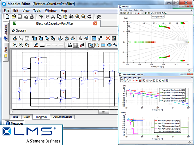
LMS recently released Imagine.Lab AMESim Rev 13. The Modelica capabilities have continued to expand and improve. Highlights of the latest Modelica platform include:
- All new Modelica-based statecharts for controlling AMESim plant models
- Improved, model-centric workflow for the Modelica Editor
- Improved user interface for library management and class creation
- Improved support for the Modelica Language Specification
- Improved code generation for more explicit / smaller implicit systems and faster simulations
- Improved user interface for model compilation and inclusion of external C-code
As with previous releases, Modelica developers have access to LMS Imagine.Lab AMESim's wide range of analysis tools and platform features. Users can easily apply the following to their Modelica models:
- Visualization: Advanced plotting tools, 3D animation of results, and customizeable, interactive dashboards
- Performance Analyzer: Statistics about CPU usage, solver steps and function evaluations, information about which state variable control the solver steps, and maximal frequencies and damping ratios
- Linear Analysis: Eigenvalues, modal shapes, frequency response plots (Bode, Nyquist and Nichols), and root locus plots
- Design Exploration: Design of Experiments, optimization, and Monte Carlo analysis
- Scripting: App Designer for creating customized GUI's, and Python support for scripting model creation, simulation and post-processing
Please visit the LMS website for more information.
This article is provided by Michael Sasena (LMS International)
Full FMI range now covered in AMESim Rev 13
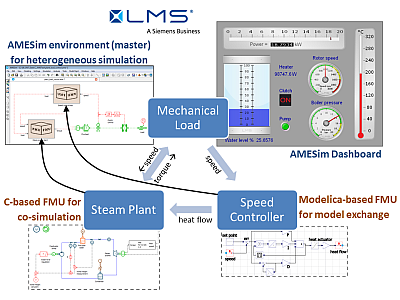
The recently released LMS Imagine.Lab AMESim Rev 13 now covers the full range of the FMI 1.0 specification: FMI Import and Export, for either Co-simulation or Model Exchange. Rev 13 comes with several new demo models and tutorials, including a steam power plant model which demonstrates each aspect of FMU utilization. A Modelica-based heat actuator and controller model are exported as an FMU for Model Exchange, while a steam plant model using AMESim's C-based libraries is exported as an FMU for Co-simulation. Users create a closed-loop AMESim simulation by importing the FMU for Co-simulation and the FMU for Model Exchange and coupling it to a model of the system load. Users can then run the simulation and observe the system response via an animated dashboard.
By combining these powerful software interfaces with its advanced solvers, high-level analysis capabilities and pre/post-processing tools, AMESim provides a world-class integration platform for heterogeneous simulation.
Please visit the LMS website for more information.
This article is provided by Michael Sasena (LMS International)
TLK's DaVE is now providing thermal state diagrams
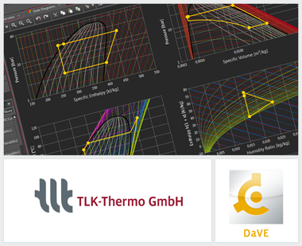
TLK's product DaVE allows both online and offline visualization of data from various sources, like data acquisition systems, TLK-TISC or files, furthermore FMUs can be loaded and simulated. In the new release, DaVE provides different state diagrams like ph, pv, Th, Ts or hx. Through this new application of DaVE all pure substances and mixtures from our TILMedia Suite will be supported.
- In-house developed equations of state
- REFPROP
- VDI Heat Atlas
- VDI Guideline 4670
- NASA Glenn Coefficients
Mixtures of these substances can be configured and visualized as well.
It is possible to combine state diagrams with any other kind of displaying instrument as well as the free configuration of state diagrams. Also automatic generation of process diagrams is supported.
For further information see www.viewer-suite.com or contact us at software@tlk-thermo.com
This article is provided by Matthias Kwak (TLK-Thermo GmbH)
SimulationX 3.6 available now
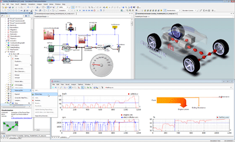
The seamless integration into closed toolchains and the rigorous support of open technology standards are amongst the distinctive features of the latest SimulationX version. This makes SimulationX 3.6 the cornerstone to the engineer’s vision of an integrated product development and system simulation.
Highlights in SimulationX 3.6:
- Over 100 new and 50 enhanced model types streamline your workflow
- 6 new libraries with more than 100 new sample models:
- Additional interfaces for B&R Automation Studio, FMI, new options for code export and add-ins for Microsoft® Office for increased efficiency
Acoustics
Gears (MBS)
Heat Transfer (steady-state & dynamic)
Combustion Engines III
Electrical Power and Communication Analysis
SubSea Electrical
This article is provided by Manuela Joseph (ITI GmbH)
17th ITI Symposium - Call for Papers
This year's annual user convention on system simulation from November 3-5, 2014, provides a platform for companies and research institutes to introduce themselves to an international audience. Presentations of successful projects and lively discussions about the latest results with other users, developers and experts from the industry make it worth the while. The “Call for Papers” is now live, and submissions can be sent in until April 25. The spectrum of topics ranges from basic research and application scenarios to visionary ideas. Find more information on our homepage.
This article is provided by Manuela Joseph (ITI GmbH)
OpenModelica 1.9.1 Beta Release
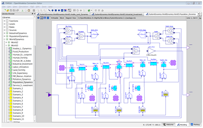
OPENMODELICA IS AN OPEN-SOURCE model-based cyber-physical mathematical modeling, architectural description and simulation environment intended for industrial and academic usage. Its long-term development is supported by a non-profit organization – the Open Source Modelica Consortium (OSMC), www.openmodelica.org , with many company, institute, and university members.
The main highlights for this release:
- Further improved support for a number of libraries including MSL 3.2.1, ModelicaTest 3.2.1, PetriNet, Buildings, PowerSystems, OpenHydraulics, ThermoPower, and ThermoSysPro. See trend .
- Convenient editing of model parameter values and resimulation in OMEdit without recompilation after parameter changes.
- Automatic differentiation of algorithms and functions.
- Improved testing facilities and library coverage reporting.
- Improved model compilation speed by compiling model parts in parallel.
- Support for running model simulations in a web browser.
- Compiler back-end partly redesigned for improved scalability and better modularity.
- Further enhanced compiler front-end scalability, speed and memory, will be part of 1.9.1 final release.
- Better coverage of Modelica libraries using Fluid and Media, will be part of 1.9.1 final release.
The development work is organized by the Open Source Modelica Consortium, currently 45 organizations.
For more information, see www.openmodelica.org .
This article is provided by Peter Fritzson (Linköping University)
Dymola 2014 FD01

We are happy to announce that Dymola 2014 FD01 was released on November 27, 2013. The key highlights are:
Standardization and compliance
Dymola 2014 FD01 is fully Modelica compliant. Tested against the official Modelica test suite, it translates and simulates all test cases as prescribed.
FMI 2.0 is near completion, and the final text is expected any moment. As the only available tool, Dymola supports FMI 2.0 according to the first release candidate of the specification. Several other improvements have been made for FMI, for example, support of structured signal names.
Modeling and simulation
The new built-in script editor facilitates experimentation and debugging of models using the Modelica scripting language. Better diagnostics and simulation event logging helps model debugging.
New model libraries
Three new model libraries are available in this release: fuel cell library, heat exchanger library and vapor cycle library.
Library updates made easier by automatic conversion across multiple versions. This means that intermediate versions need not be loaded and upgrading takes less time.
For more information see www.dymola.com.
This article is provided by Dag Brück (Dassault Systèmes AB, Lund)
New libraries for Dymola
We are proud to present three new libraries in Dymola 2014 FD01.
Fuel Cell Library
- Well suited for system and component design
- Easy to adapt stack and reactor to new structures
- Solid oxide fuel cells (SOFC) and Proton exchange membrane fuel cells (PEMFC) in the same tool
- Predefined reactors for fuel pre-processing and internal stack reforming
- Reactions calculated by various approaches
- Handles reformate and other ideal gas mixtures
- Support for condensation
Heat Exchanger Library
- Geometry based heat exchanger models for system simulations
- Friction and heat transfer models for louvered fin designs
- Captures effects of in-homogeneously distributed inlet air flow
- Coupling to CFD data
- Modeling of heat exchanger stacks with different geometries, sizes and positions
Vapor Cycle Library
- Wide range of working fluids
- Two- and one-phase fluid flow
- Choice of different heat transfer and pressure loss correlations that also covers phase change
- Ready-to use component models
- Example parameterization
- Interfaces and templates for user-specific modifications
- System examples show the use of the library
This article is provided by Dag Brück (Dassault Systèmes AB, Lund)
Dassault Systèmes at Modelica 2014
Dassault Systèmes is proud to be Gold Sponsor of the Modelica 2014 conference, which takes place in Lund, Sweden on 10-12 March. Some of our highlights are:
- Hilding Elmqvist's plenary talk about the the history of Dymola and Modelica
- FMI 2.0 tutorial
- Vendor session for all existing and future users
- Exhibition booth
This article is provided by Dag Brück (Dassault Systèmes AB, Lund)
New MapleSim release offers improved performance, flexibility
Maplesoft™ has released a new version of MapleSim™, the advanced system-level modeling and simulation platform. This release includes substantial improvements to the MapleSim simulation engine, resulting in faster model pre-processing times, more flexible code generation, and expanded support for Modelica-based custom components.
In MapleSim 6.3, the symbolic pre-processing time has been reduced for all models, so the numerical simulation phase will begin sooner. This reduction is dramatic in the case of models that use the MapleSim Hydraulics Library from Modelon, so these simulations now run significantly faster. In addition, code generation for all target platforms has been improved so that more model parameters are modifiable when the simulation is run outside of MapleSim. Other improvements include expanded support for Modelica-based custom components so that a wider class of functions can now be included in the component definition.
This article is provided by Tina George (Maplesoft)
Maplesoft at the International Modelica Conference
Maplesoft will be an active participant in the 10th International Modelica Conference in Lund, Sweden, March 10-12, 2014.
In addition to our presence in booth #4, Maplesoft has two presentations.
We hope to see you there!
Tutorial: Advanced Analysis of Modelica Models using MapleSim and Maple
1:00 pm, March 10, 2014
Presenter: Dr. Chad Schmitke
Since its inception, Modelica has held the promise of letting engineers go further with physical modeling than just running simulations. With the connection between MapleSim and Maple, users can create and document their own symbolic and numeric analyses of Modelica models in a rich problem-solving environment, in addition to performing traditional simulations.
This tutorial will guide you through the process of extracting equations from a modelica model into a form amenable to a wide range of analysis. Through hands-on exercises, it will provide you with basic skills to solve, analyse, manipulate, and simulate these equations.
Examples will include: extracting, interrogating, and solving kinematic and dynamic equations from multi-body models; creating, manipulating and discretizing PDEs; creating Modelica components from derived equations; setting-up parameter sweeps and optimizations on Modelica models.
Vendor Session: 17.00 on Tuesday, March 11
MapleSim: Advanced System-Level Modeling
Presenter: Dr. Chad Schmitke
This presentation will demonstrate the latest developments, libraries and applications of MapleSim, the system-level modeling and simulation environment based on Modelica.
System equations in MapleSim can be viewed and manipulated within the Maple environment where one can take advantage of Maple's numerous standard packages for dynamic system analysis, optimization, or statistics. The Maple programming language can be used to further manipulate and create applications around models.
MapleSim's support for modeling multibody systems provides the user with a choice of coordinate sets, giving one control over the form of the resulting model equations. Models can be conceptualized using the 3-D visualization engine (as the model is constructed), providing greater insight into the topology and dynamic system behavior.
Due to its use of a sophisticated symbolic simplification engine, MapleSim is able to generate highly efficient real-time code for use in popular environments such as Simulink® and LABVIEW™. FMI export opens up further interoperability options.
This article is provided by Tina George (Maplesoft)
ETAS GmbH introduces FMI-based integration and simulation platform
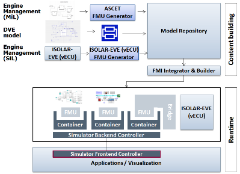
On the upcoming Modelica conference, ETAS GmbH will introduce its new FMI-based integration and simulation platform.
For 20 years, ETAS GmbH is known as competent player in the area of (model-based) embedded software development. Tools like e.g. ASCET, INTECRIO, ISOLAR-EVE and LABCAR demonstrate the expertise in software development and validation throughout the whole development cycle (Model, Software and Hardware in the Loop - MiL, SiL and HiL).
With its new integration and simulation platform, ETAS now offers a holistic solution for embedded system validation based on the FMI standard. Artifacts on the control side, i.e. models as well as virtual ECUs, can be integrated with components from the plant side, therefore allowing an early virtual system validation. All artifacts are integrated as FMUs, thus providing an open system (co-) simulation solution, independent of the native modeling languages used.
The adjacent graphic describes the platform set-up in a powertrain co-simulation use case (MiL and SiL environment).
In addition to the FMI based integration and simulation platform, ETAS GmbH also offers FMU generators for ASCET, Simulink® and ISOLAR-EVE. These products are complemented by equivalent customer-specific engineering and consulting services.
For further details please contact andreas.berg@etas.com.
This article is provided by Silke Kronimus (ETAS GmbH)